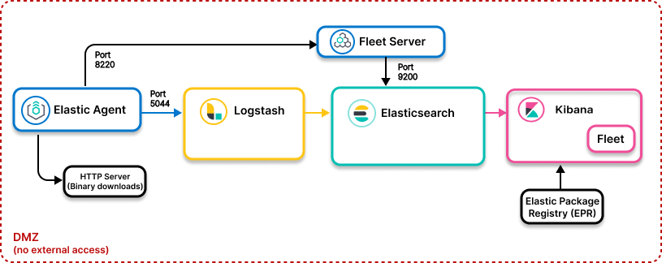

Elastic Agent to Logstash: Air-gapped environment
edit

- Ingest model
-
All Elastic Stack components deployed inside a DMZ:
-
Control path: Elastic Agent to Fleet to Elasticsearch
- Data path: Elastic Agent to Elasticsearch
-
Control path: Elastic Agent to Fleet to Elasticsearch
- Use when
- Your self-managed Elastic Stack deployment has no access to outside networks
Resources
editInfo for air-gapped environments:
Geoip database management in air-gapped environments
editThe Logstash geoip filter requires regular database updates to remain up-to-date with the latest information. If you are using the Logstash geoip filter plugin in an air-gapped environment, you can manage updates through a proxy, a custom endpoint, or manually. Check out Manage your own database updates for more info.